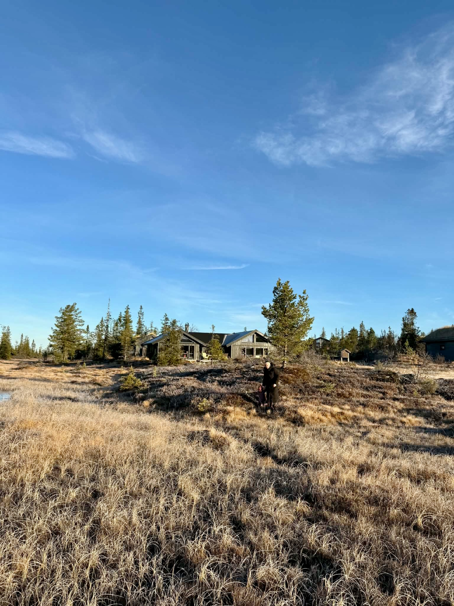

Ullevålseter is one of those places that feels like it shouldn't exist — a traditional mountain cabin serving waffles and coffee in the middle of a forest, reachable only on foot or ski, yet just a couple of hours from the centre of a capital city. Getting there is the point of this hike.
We start at Sognsvann lake, where the forest closes in immediately. The trail heads north through classic Nordmarka terrain — rolling pine forest, occasional lake views, the crunch of the path underfoot. The pace is steady but the ground is forgiving, and your guide will stop to point out the details that pass unnoticed at walking speed: the lichen on the rocks, the mushrooms in season, the traces of the old logging culture that shaped these forests.
At Ullevålseter we stop for waffles with brown cheese and a coffee — one of the great Oslo rituals. The return takes a slightly different route, longer but easier, through quieter forest paths back to the lake.
Highlights
- Ullevålseter cabin — waffles, coffee, and a genuine slice of Norwegian culture
- Deep Nordmarka pine and birch forest
- Sognsvann lake at start and finish
- Forest lakes and wildlife along the trail
- Mushrooms, lichen and seasonal forest detail with your guide
Good to know
- ~500 m of total elevation gain — suitable for recreational walkers
- Well-marked forest trails throughout
- Waffle stop at Ullevålseter included in the route
- Bring an extra layer and waterproof — forest weather can change
- Hiking boots recommended
